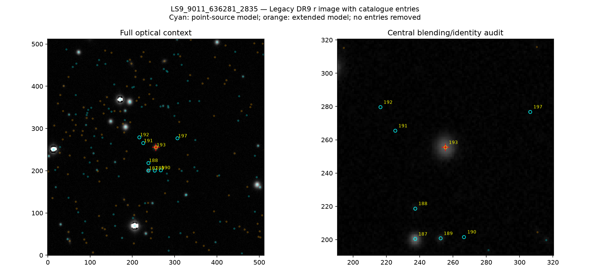

Where does the galaxy’s light come from?
Two real galaxy candidates. 561 native measurements. Every exposure retains its own wavelength response.
Measurement extraction is complete. Absolute accuracy and redshift are not validated.
Download executed notebook · Offline evidence bundle · Measurement table
Follow the evidence
- Identify the galaxy and every neighbour.
- Read each exposure’s position, wavelength and quality information.
- Fit native pixels using galaxy shapes and local ePSFs.
- Inspect residuals; preserve failures.
- Use individual responses to compare repeats.
- Validate uncertainties before redshift inference.
Inspect a real scene

Optical source identity check; not an infrared brightness measurement.
What supplies each input?
Results so far
Repeats predict about 40–42% smaller conditional random-noise errors for a fixed assumed spectrum. That is a precision calculation, not demonstrated accuracy. 19 measurements retain fit-quality flags. No cosmological distance or recession velocity is reported.
Observed repeat check
Under three predeclared smooth spectral assumptions, unflagged held-out predictions have residual scatter about 1.05 times the conditional prediction error for one galaxy and 1.16 for the other. Predictions share data; this is not absolute accuracy or validated uncertainty coverage. In three targeted pixel-sensitivity checks, target flux changes were below 0.1 of the original conditional error. No alternate result was adopted.
Held-out prediction table · Assumptions and summary
Try another galaxy
The notebook documents required images, neighbour catalogue, calibration products, position/shape conventions and an opt-in native measurement cell. It also identifies which steps remain unvalidated. Changing only the name does not rerun a science pipeline.
Full processing provenance · Optional native-fit helper (new-target use unvalidated)